This is our first axisymmetric Navier–Stokes example problem. We discuss the non-dimensionalisation of the equations and their implementation in oomph-lib, and demonstrate the solution of a spin-up problem.
The axisymmetric Navier–Stokes equations
In dimensional form the axisymmetric Navier–Stokes equations are given by the momentum equations (for the 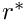 , 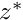 and  directions, respectively)
directions, respectively)
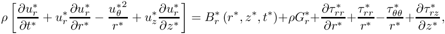
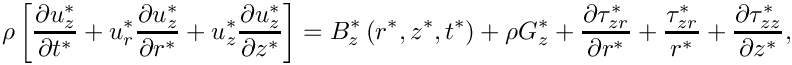
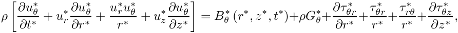
and the continuity equation
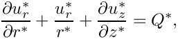
where 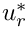 , 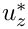 and 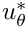 are the radial, axial and azimuthal velocity components respectively, 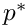 is the pressure and 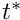 is time. We have split the body force into two components: A constant vector 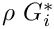 (where 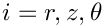) which typically represents gravitational forces; and a variable body force, 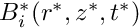 . 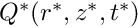 is a volumetric source term for the continuity equation and is typically equal to zero.
The components of the dimensional stress tensor 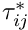 are defined as:
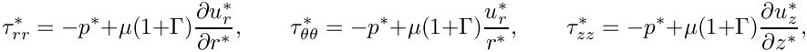
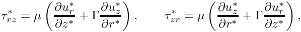
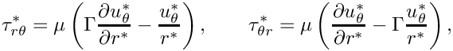
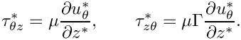
We note that taking  corresponds to using the stress-divergence form of the viscous term in the Navier–Stokes equations, which is the form that
corresponds to using the stress-divergence form of the viscous term in the Navier–Stokes equations, which is the form that oomph-lib uses by default. We can, however, recover the ‘standard’ form by setting 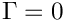.
We non-dimensionalise the equations, using problem-specific reference quantities for the velocity, 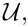 length, 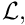 and time, 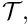 and scale the constant body force vector on the gravitational acceleration, 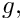 so that
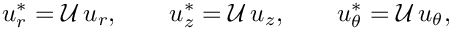
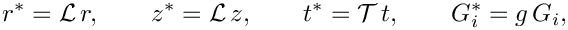
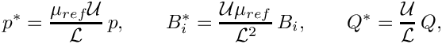
where we note that the pressure and the variable body force have been non-dimensionalised on the viscous scale.  and
and  are reference values for the fluid viscosity and density, respectively. In single-fluid problems, they are identical to the viscosity
are reference values for the fluid viscosity and density, respectively. In single-fluid problems, they are identical to the viscosity  and density
and density  of the (one and only) fluid in the problem.
of the (one and only) fluid in the problem.
The non-dimensional form of the axisymmetric Navier–Stokes equations is then given by
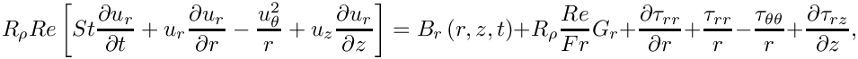
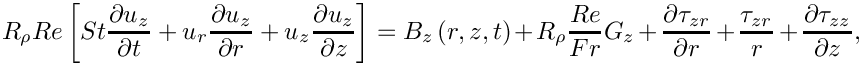
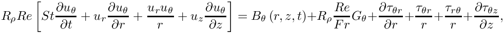
and
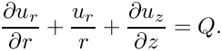
Here the components of the non-dimensional stress tensor 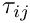 are defined as:
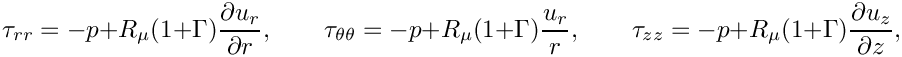
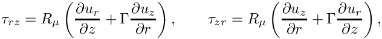
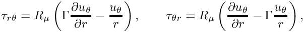
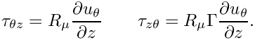
The dimensionless parameters
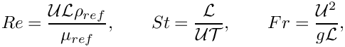
are the Reynolds number, Strouhal number and Froude number respectively. 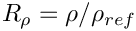 and 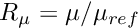 represent the ratios of the fluid's density and its dynamic viscosity, relative to the density and viscosity values used to form the non-dimensional parameters (By default,  ; other values tend to be used in problems involving multiple fluids). We refer to another tutorial for a more detailed discussion of these non-dimensional parameters and their default values.
; other values tend to be used in problems involving multiple fluids). We refer to another tutorial for a more detailed discussion of these non-dimensional parameters and their default values.
The above equations are typically augmented by Dirichlet boundary conditions for (some of) the velocity components. On boundaries where no velocity boundary conditions are applied, the flow satisfies the "traction free" natural boundary condition 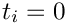. For example, in the spin-up problem to be considered below, no condition is applied to the  -component of the velocity on the symmetry boundary, which means that the traction in this direction,
-component of the velocity on the symmetry boundary, which means that the traction in this direction,  , is equal to zero.
, is equal to zero.
If the velocity is prescribed along the entire domain boundary, the fluid pressure  is only determined up to an arbitrary constant. This indeterminacy may be overcome by prescribing the value of the pressure at a single point in the domain. See the exercises at the end of the (non-axisymmetric) driven cavity example for further discussion of this issue.
is only determined up to an arbitrary constant. This indeterminacy may be overcome by prescribing the value of the pressure at a single point in the domain. See the exercises at the end of the (non-axisymmetric) driven cavity example for further discussion of this issue.
Implementation
oomph-lib provides two LBB-stable isoparametric axisymmetric Navier–Stokes elements that are based on the QElement<2,3> family of geometric finite elements. They are nine-node quadrilateral elements which only differ in the way in which the pressure is represented. In AxisymmetricQCrouzeixRaviartElements the pressure is represented by a discontinuous, piecewise bi-linear function. AxisymmetricQTaylorHoodElements represent the pressure by a globally-continuous, piecewise bi-linear interpolation between the pressure values that are stored at the elements' four corner nodes.
The implementation of these axisymmetric Navier–Stokes elements is very similar to their non-axisymmetric counterparts, discussed in detail in another tutorial. The radial and axial nodal positions are stored at the first and second nodal coordinates respectively, and can therefore be accessed by the member functions
- Radial coordinate (
 ):
): Node::x(0) - Axial coordinate ( ):
Node::x(1)
By default the radial, axial and azimuthal components are stored as the first, second and third nodal values respectively, and can therefore be accessed by the member functions
- Radial component ( 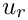):
Node::value(0) - Axial component ( 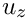):
Node::value(1) - Azimuthal component ( 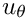):
Node::value(2)
The example problem
The solution of the axisymmetric Navier–Stokes equations will be illustrated using the example of a spin-up problem. We consider a sealed cylindrical container of radius  and height
and height  , filled with a fluid of density and dynamic viscosity . Both the fluid and the cylinder are initially at rest, and at time
, filled with a fluid of density and dynamic viscosity . Both the fluid and the cylinder are initially at rest, and at time  the cylinder immediately begins to rotate about its vertical axis of symmetry with a constant angular velocity 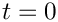. Initially, the bulk of the fluid remains stationary, with the exception of the regions next to the solid boundaries. The fluid near the top and bottom ‘lids’ is moving faster than that along the bulk of the cylinder, and gets driven radially outward. It is replaced by fluid from the interior, setting up secondary flows in the - plane, until eventually the entire fluid is moving in solid body rotation with the cylinder.
the cylinder immediately begins to rotate about its vertical axis of symmetry with a constant angular velocity 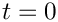. Initially, the bulk of the fluid remains stationary, with the exception of the regions next to the solid boundaries. The fluid near the top and bottom ‘lids’ is moving faster than that along the bulk of the cylinder, and gets driven radially outward. It is replaced by fluid from the interior, setting up secondary flows in the - plane, until eventually the entire fluid is moving in solid body rotation with the cylinder.
We model this problem by solving the axisymmetric Navier–Stokes equations in a rectangular domain of width and height . For our non-dimensionalisation we choose the length scale 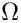 to be the radius of the cylinder and the velocity scale  to be the speed of the outer wall 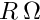. The time scale
to be the speed of the outer wall 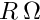. The time scale  is chosen to be 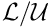 so that the Strouhal number is equal to one. We choose an aspect ratio of 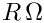 and therefore our domain is defined to be
is chosen to be 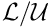 so that the Strouhal number is equal to one. We choose an aspect ratio of 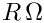 and therefore our domain is defined to be
The governing equations are subject to the Dirichlet boundary conditions
on the bottom, right and top boundaries and
on the left boundary, . The -component of the velocity on this boundary is traction-free, which corresponds to the symmetry condition .
Results
The figure below shows contour plots of the azimuthal velocity component and the pressure distribution with superimposed streamlines, taken from an animation of the flow field, computed with axisymmetric Taylor-Hood elements for the parameters
The figure below shows carpet plots of all three velocity components and the pressure, taken from another animation of the flow field, computed with axisymmetric Taylor-Hood elements for the parameters

Global parameters and functions
The Reynolds number and the Womersley number (the product of the Reynolds and Strouhal numbers) are needed in this problem. As usual, we define them in a namespace:
The driver code
We start by specifying the (non-dimensional) length of time we want to run the simulation for and the size of the timestep. Because all driver codes are run as part of oomph-lib's self-testing routines we allow the user to pass a command line argument to the executable which sets the maximum time to some lower value.
Next we specify the dimensions of the mesh and the number of elements in the radial and azimuthal directions.
We build the problem using RefineableAxisymmetricQTaylorHoodElements and the BDF<2> timestepper, before calling unsteady_run(...). This function solves the system at each timestep using the Problem::unsteady_newton_solve(...) function before documenting the result.
We then repeat the process with RefineableAxisymmetricQCrouzeixRaviartElements.
The problem class
The Problem class for our unsteady axisymmetric Navier–Stokes problem is very similar to that used in the Rayleigh channel example. We specify the type of the element and the type of the timestepper (assumed to be a member of the BDF family) as template parameters, and pass the number of elements and domain length in both coordinate directions to the problem constructor. We define an empty destructor, functions to set the initial and boundary conditions and a post-processing function doc_solution(...), which will be used by the timestepping function unsteady_run(...).
Next we define an access function to the specific Mesh:
We reset the boundary conditions before each solve by overloading Problem::actions_before_newton_solve(). This is to ensure that all newly-created nodes are given the correct boundary conditions.
In Navier–Stokes problems in which the velocity is prescribed along the entire domain boundary, the pressure is only determined up an arbitrary constant, making it necessary to "pin" one pressure value. If the pinned pressure degree of freedom is associated with an element that is unrefined during the mesh adaptation, the pinned degree of freedom may no longer exist in the adapted problem. We therefore use the function Problem::actions_after_adapt() to ensure that precisely one pressure degree of freedom is pinned when re-solving the adapted problem. Additionally, the possible presence of hanging nodes in an adapted mesh requires special treatment for elements (e.g. Taylor-Hood elements) in which the pressure is represented by a low-order interpolation between a subset of the element's nodal values. The function AxisymmetricNavierStokesEquations::pin_redundant_nodal_pressures(...) performs the required tasks. The technical details of these functions are discussed in detail in an earlier tutorial.
Finally, we provide a helper function fix_pressure(...) which pins a pressure value in a specified element and assigns a specific value.
The problem constructor
We start by building the timestepper, determining its type from the class's second template argument, and pass a pointer to it to the problem, using the function Problem::add_time_stepper_pt(...).
Next we build the adaptive mesh and specify an error estimator, which will be used to guide the automatic mesh adaptation. We pass this to the mesh, set the maximum refinement level and override the maximum and minimum permitted errors, which are used to determine whether or not an element should be refined/unrefined during mesh adaptation.
We pin the radial and azimuthal velocity components on all boundaries, and the axial component on the three solid boundaries.
We pass the pointers to the Reynolds and Womersley numbers, and , and the pointer to the global time object (created when we called Problem::add_time_stepper_pt(...) above) to the elements. Because we know that the mesh will remain stationary we can disable the ALE formulation of the unsteady equations by calling AxisymmetricNavierStokesEquations::disable_ALE(). This suppresses the additional computation required to calculate the correction to the Eulerian time-derivative which is required if the mesh is moving, as discussed in detail in another tutorial.
Since no traction boundary conditions are applied anywhere, the pressure is only determined up to an arbitrary constant. For the reasons discussed above we pin any redundant pressure degrees of freedom caused by hanging nodes and then ensure a unique solution by pinning a single pressure value. Finally, we set up the equation numbering scheme using the function Problem::assign_eqn_numbers().
Initial conditions
The function set_initial_condition() sets the initial conditions for the problem by looping over all the nodes in the mesh and setting all velocity components to zero. No initial conditions are required for the pressure. We then call the function Problem::assign_initial_values_impulsive() which copies the current values at each of the nodes into the required number of history values for the timestepper in question. This corresponds to an impulsive start, as for all time  the fluid is at rest. At the first timestep, the solid domain boundaries are immediately moving with a speed corresponding to their radial distance from the symmetry boundary.
the fluid is at rest. At the first timestep, the solid domain boundaries are immediately moving with a speed corresponding to their radial distance from the symmetry boundary. Problem::set_initial_condition() is called after each mesh adaptation on the first timestep only. This means that any newly-created nodes obtain their values from the actual (analytical) initial conditions rather than from interpolation of the values of previously-existing nodes.
Boundary conditions
The function set_boundary_conditions() sets the boundary conditions for the problem. On the three solid boundaries ( , and ) we set the radial and axial velocities to zero so that there is no penetration of the wall by the fluid or flow along it. To simulate the domain rotating around the axis we set the azimuthal velocity at each node along these boundaries to be equal to the radial position of the node. On the symmetry boundary ( ) we set the radial and azimuthal velocities to zero but leave the axial component unconstrained. As discussed above, not applying a velocity boundary condition causes the flow to satisfy the "traction
free" natural boundary condition; in this case, . This corresponds to the symmetry condition .
Post-processing
As expected, this member function documents the computed solution. We first print the value of the current time to the screen, before outputting the computed solution.
The timestepping loop
The function unsteady_run(...) is used to perform the timestepping procedure. We start by creating a DocInfo object to store the output directory and the label for the output files.
Before using any of oomph-lib's timestepping functions, the timestep must be passed to the problem's timestepping routines by calling the function Problem::initialise_dt(...) which sets the weights for all timesteppers in the problem. Next we assign the initial conditions by calling Problem::set_initial_condition(), which was discussed above.
We define the maximum number of spatial adaptations which are permitted per timestep, and refine the mesh uniformly twice.
We determine the number of timesteps to be performed and document the initial conditions. A flag, first_timestep, is initialised and set to true. This flag will be passed to Problem::unsteady_newton_solve(...), and when set to true instructs the code to re-assign the initial conditions after every mesh adaptation.
A key feature of this problem is the fact that the flow field approaches a "trivial" solution (rigid body rotation) which can be fully-resolved by the discretisation. In that case, equidistribution of the error (normalised by the norm of the global error which tends to zero!) leads to strong uniform mesh refinement despite the fact that the solution is fully converged. To avoid this, we prescribe a constant reference flux to normalise the error. For more details, see the discussion in the Z2ErrorEstimator class reference.
Finally, we perform the actual timestepping loop. For each timestep the function unsteady_newton_solve(dt) is called and the solution documented.
Comments and Exercises
Good practice: Assigning boundary conditions
In our driver code we reset the boundary conditions for the problem before each Newton solve. This is done to ensure that any new boundary nodes created during mesh refinement are explicitly given the correct boundary conditions. However, the function that actually creates the new nodes, RefineableQElement<2>::build(...), automatically assigns new nodes with values by interpolating within the father element. Since in our case the boundary conditions are linear, there is in fact no need to reset them at any point during the simulation, as the new boundary nodes were already given precisely the correct values by interpolation. Resetting the boundary conditions is only strictly necessary, therefore, in cases where:
- The boundary conditions are given by a function which is of higher order than the shape functions used by the finite element, or
- The boundary conditions are time-dependent.
Good practice: Assigning initial conditions
Similarly, we repeatedly call the set_initial_condition() function after each mesh adaptation during the first timestep. This is done to ensure that the exact initial conditions are given to newly created nodes during mesh refinement. Again, this is not strictly necessary in our case since RefineableQElement<2>::build(...) provides newly-created nodes with history values which are computed by interpolation of the history values stored at the nodes of the father element. Our initial conditions are constant and can therefore be represented exactly by this procedure. Should the initial conditions be given by an analytical function of higher order than the shape functions used by the finite elements, however, it would indeed be necessary to explicitly provide newly-created nodes with the exact initial conditions during the first timestep. For a more in-depth discussion, see another tutorial.
Omitting the re-assignment of the initial conditions on the adapted mesh when performing the first timestep does have a subtle effect that we encourage you to explore in the exercises below. You will observe that the solution obtained when re-assigning the initial conditions differs very slightly from that obtained when this step is suppressed. This obviously seems to contradict the statements made above and requires some explanation.
To understand why the behaviour is not unexpected (and perfectly acceptable!) let us analyse in more detail what really happens when we compute the first timestep in a spatially adaptive computation. When we perform the first Newton solve on the original mesh, the history values (which, for a BDF timestepper, represent the solution at previous timesteps) are identically equal to zero. The current values are also zero but this has no particular significance – they simply provide the initial guess for the solution at the advanced time level and their values are subsequently updated by the Newton solver.
Following the convergence of the Newton solver, the history values will therefore have retained their original values (zero) while the current values will have been updated to represent the "correct" solution of the nonlinear problem at the next timestep (on the current mesh). The accuracy of this solution is now assessed by the spatial error estimator. If the estimated error is deemed too large, the mesh is adapted and all quantities (history values and current values) are automatically transferred onto the new mesh by interpolation – exactly as discussed above. Interpolation of the (identically equal to zero) history values onto the new mesh assigns zero history values for all newly-created nodes – exactly what we (needlessly) do in our own implementation of Problem::set_initial_conditions(). The interpolation of the current values transfers what is our current "best guess" for the solution at the advanced time onto the new mesh. In principle, this provides a "better" initial guess for the solution at the advanced time level than the zero initial guess that we re-assign when we call Problem::set_initial_conditions() but (as long as the Newton iteration converges) this assignment is irrelevant. However, starting the Newton iteration from a different initial guess will almost certainly lead to a slightly different solution – a solution being defined as a(ny) set of current values for which the maximum residual in the Problem's residual vector is less than the required tolerance. Hence, even though omitting or performing the re-assignment of the initial conditions leads to two slightly different solutions, both solutions are equally acceptable (within the threshold that is implicit in our convergence criterion for the Newton iteration).
Exercises
- Remove the function
set_initial_condition()entirely from the driver code (do not just leave it empty!), so that the initial conditions are not constantly reset during the first timestep. Confirm that the code still produces approximately (but not precisely) the same results, as discussed in the previous section. - Restore
set_initial_condition()to its original state, but remove the call toassign_initial_values_impulsive(). Confirm that the code still produces precisely the same results. Why are exactly the same results produced this time?
Source files for this tutorial
- The source files for this tutorial are located in the directory:
demo_drivers/axisym_navier_stokes/spin_up/
- The driver code is:
demo_drivers/axisym_navier_stokes/spin_up/spin_up.cc
PDF file
A pdf version of this document is available.